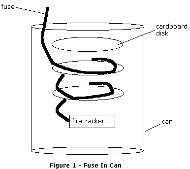
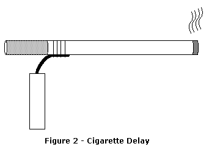
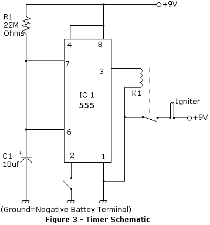
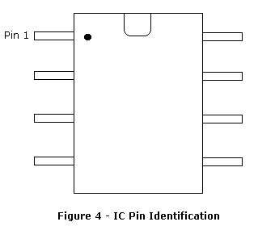

Tom Spooner
Up to now, most of my little playthings have required that you be somewhere in the immediate vicinity when fun things happen. But for reasons I hope are obvious, this isn't always a really good idea; after all, "Let's just say that we'd prefer to avoid any Imperial entanglements." That might be difficult if some JBT catches you with your finger on the button.
So let's look at some time delay devices. The most classic time delay is a long fuse (you have bought that cannon fuse, right?). Calibrate your fuse by burning a measured length and timing the burn; that gives you the feet per minute, so you can determine how much fuse you'll need for a getaway. The problem with a fuse is that it's just a little obvious; all that smoke and fire, dontcha know. You may be able to mask those by coiling the fuse inside a tin can and capping the can. But that will only work for relatively short fuse lengths, as the can will rapidly fill with smoke and it'll try to escape. Still, you may be able to get a minute or two of time out of such a gadget. Hint: If coiling a fair bit of fuse into that can, place cardboard disks between coils so that the fire won't jump 'track' and shortchange you on your time delay. (See figure 1)

Next, we have the basic burning cigarette. Back in my smoking days, I could get up to seven minutes of delay out of a regular length ciggie. That assumes that you let it burn on 'idle', no puffing. If you have to take a drag or two to keep up appearances, expect to lose significant amounts of time. Attach a short length of quick burning fuse to the base of the cig, just ahead of the filter. This approach still smokes, but now you have non-incriminating excuse for the telltale haze. (See figure 2)

Or you can try a slightly higher tech approach: The electronic timer. This little gadget can be built with seven basic components available at any electronics hobby shop and a little wire. No smoke, no fire... unless you manage to set your house on fire with the soldering iron. Yes, this does require a little soldering. Live with it; it's a useful skill anyway.
For a 220 second delay timer, you'll need:
'Perf board' is a brown phenolic card with a grid of tiny holes all through it. It's normally used to improvise or test new circuit designs, or when (such as now) it just isn't worth the trouble of etching a nice printed circuit board. The idea is to place the leads of the above electronic components through the holes in the board, then connect the various leads appropriately with lengths of wire. The board is for neatness, and to hold the leads in place while you work. You could do without it if you wish.
Security Note: JBTs often frown upon harmless little practical jokes like leaving a string of firecrackers on a timer in an IRS lobby (just to celebrate Tax Freedom Day, say). Be damned careful about leaving fingerprints on even the tiniest component, much less that perf board. Latex gloves are readily available at any pharmacy.

As to how to wire up the timer, take a look at the schematic diagram in figure 3. Pretty simple, right? Right. If you haven't used an IC before, you may be confused by those pin numbers on the 555 chip. Pin 1 is fairly easy to identify. Look closely at the chip near each end. Pin 1 will probably be marked with a small dot. Or one end of the chip may have a small indentation molded into the case; if so, consider that dent the top of the chip, and pin 1 is the pin at top left. Other pins simply count around the chip from 1. (See figure 4)

When assembling the timer, try to use as little solder on each wire connection as possible. When soldering IC pins, work quickly; you don't want to overheat the chip. You can try clipping a paper clip or other metallic clip to IC pins between the chip proper and where you're soldering. Such a 'heat sink' will give excess heat somewhere to go other than the chip. Remember to remove the clip when done; it doesn't exactly help the actual timer operation.
For your purposes, relay K1 (attached to IC pin 3) may be superfluous. The electrical current from pin 3 that would make the relay operate might be enough to fire your igniter. But if the igniter needs too much current to torch off, the IC won't be able to handle the load; so you use the IC to control a relay that can handle it. Voilà! Just connect the igniter leads to the relay contacts. If you're really on a budget, you can skimp by improvising a switch (S1) with a couple of lengths of wire; you'd close the 'switch' and start the timer by twisting the wires together.
Depending on what sort of capacitor you acquire, its 'polarity' can affect circuit operation. Look closely and see if one lead or the other is marked with a plus or minus sign. If so, note on the schematic diagram that the plus side is installed away from the negative battery terminal. It doesn't matter which way you install the resistor or switch.
Once you complete the circuit, be sure to test it. You can attach a flashlight bulb in place of an igniter and flip the switch (S1). After 220 seconds, the bulb should light. That's all there is to using the timer.
If 220 seconds is not appropriate for your needs, that can be changed. The time delay is determined by the values of the resistor (R1) and capacitor (C1). If you make either one larger, the time delay gets longer. You can figure what you need by multiplying the resistance of the resistor by the capacitance of the capacitor. In this basic case, 22,000,000 ohms times .000010 farads gave 220 seconds. Try leaving the capacitor alone and increasing or decreasing just the resistor. For especially long delays, you'll need very high resistance. You can accomplish that by chaining resistors together. The resistance of all of them adds up to one big resistor. Note that if 22 MegOhm resistors are not handy, you can 'build' 22 MegOhms in just this way. Improvise, adapt, blow things up.
Ah, but what to do with this little gadget, or the more basic time delays? Well, there is the aforementioned practical joke. Repeated often enough, it's guaranteed to give JBTs heartburn and possibly nervous breakdowns. The timer and a string of firecrackers can be placed within a fast food drink cup and tossed into a trash bin or abandoned on a park bench. These devices are also appropriate for firing off harmless but noisy Spooner GBS's or thermite charges-- anything pyrotechnic in nature. Heck, you could use them for fireworks displays.
But I like the idea of practical jokes on particular days. Wouldn't it be amusing if time delayed firecrackers were planted in or near IRS offices nationwide on April 15th or Tax Freedom Day? Or maybe FBI and BATF offices on April 19th? Pick a day (or days) and pass it along to friends and fellow freedom lovers. The more offices pranked simultaneously, the funnier. And that many more govgoons inconvenienced.
(c) 2001